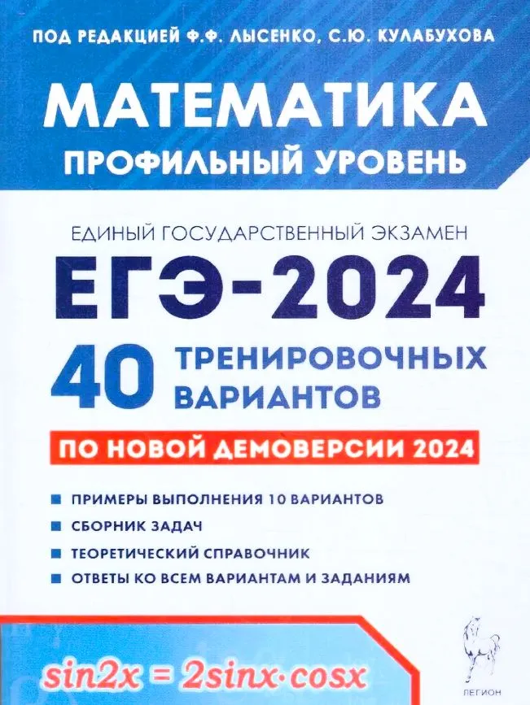
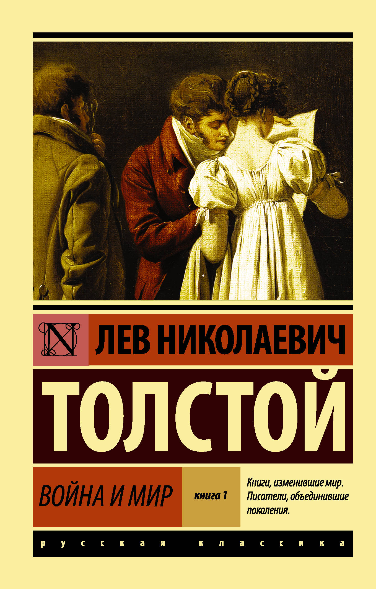

PhysTech
Задачник
Курсы
Библиотека
Телеграм
Главная
Бибилиотека
Бибилиотека
Жанры
Романы (1)
Сборники (2)
Книги

ЕГЭ Лысенко Математика ПРОФИЛЬНЫЙ уровень 40 вариантов 2024 год
Ф.Ф. Лысенко
ЕГЭ 2024 Математика: 40 вариантов. Профильный уровень. Пособие предназначено для качественной подготовки к профильному уровню ЕГЭ по математике в 2024 году. В нём учтены все изменения в спецификации 2024 года. Книга содержит: - 40 новых тренировочных вариантов, составленных в соответствии с проектами демоверсии и спецификации 2024 года профильного уровня - ЕГЭ по математике, опубликованными...

Война и мир. Книга 1
Л.Н. Толстой
«Война и мир» Л. Н. Толстого — книга на все времена. Кажется, что она существовала всегда, настолько знакомым кажется текст, едва мы открываем первые страницы романа, настолько памятны многие его эпизоды: охота и святки, первый бал Наташи Ростовой, лунная ночь в Отрадном, князь Андрей в сражении при Аустерлице... Сцены «мирной», семейной жизни сменяются картинами, имеющими значение для хода всей мировой истории, но для Толстого они равноценн...
ЕГЭ-2024. Математика. Профильный уровень: типовые экзаменационные варианты: 36 вариантов
Л.Н. Толстой
ЕГЭ-2024. Сборник тренировочных вариантов. Книга предназначена для подготовки учащихся к ЕГЭ по математике. В сборнике представлены: 36 типовых экзаменационных вариантов, составленных в соответствии с демоверсиями КИМ ЕГЭ 2024 года; ответы ко всем заданиям и критерии оценивания.